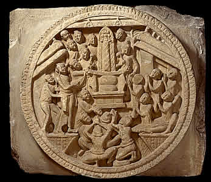

Inner cross bar
Between the railing pillars were carved stone bars known as 'cross bars'. Each cross bar had a round sculpted face. The round face is all that survives of many of the cross bars. The pillar of fire is thought to be the centre of the universe which stretches between Earth and Heaven.This scene shows worshippers around a pillar of fire which represents the Buddha. |